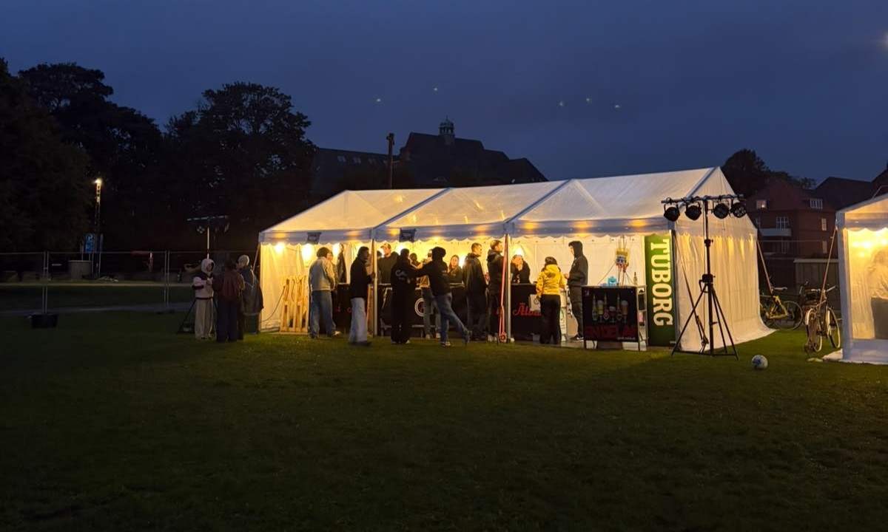

On Saturday afternoon and into the evening, students from SDU Sønderborg were invited to attend the annual Intro Festival. The festival, organised by the Intro Team, took place at Ringriderpladsen near the city centre. The goal of the festival was to welcome students to a new year of studies, with activities organised by different student organisations and live music from several local artists and DJs.
The activities and student organisation booths in the afternoon were open to everyone free of charge and saw moderate attendance. The day was characterised by a constant drizzle, and organisers speculated that the weather definitely played a role in keeping attendance lower than they had hoped. Despite the rain, spirits were high, and during a break in the weather, students emerged from the tents to play volleyball and kongespil.
A variety of student organisations signed up to organise activities and quizzes at their booths. In total, the following organisations were present: SDU Vikings, G.E.A.R., Krakens, the Drone Construction Club, IDA, Als Rocketry Club (ARC), SDU Robotics, Student Spoken Feminism (FEM), Mejeriet and European Youth South. Caféen was also present with a large bar setup, a welcome sight with Caféen closed for the foreseeable future.

Students sheltering from the rain at Caféen. Photo: Deadline
Compared to last year’s inaugural Intro Festival, this year featured more live music for attendees to enjoy. In the opening act, Jakodako sang original songs about love, parties and friendship — a fitting theme for a university event. The musical standout was Reissa Cristina Pestenaru, who was introduced as having an “angelic voice” and skilfully delivered on that promise.
“I came because I paid for the ticket already anyway.”
— Student attendee
The Selvhenter Powertrio were back from last year, but unfortunately, the weather was not in their favour. The rain increased during their set, and the crowd stayed away. In general, the evening saw much less attendance than hoped for, with people mostly stopping by to see what the event was like before heading to the after-party at Handels Kollegiet, which was notably held indoors.
Despite the weather, the Intro Festival seemed to be an overall success. Notably, the event did not receive any noise complaints from neighbouring houses, which bodes well for a hopefully drier repeat next year. Next week will be the last of the intro events, with the Intro Party at Alsion on Saturday, September 26.